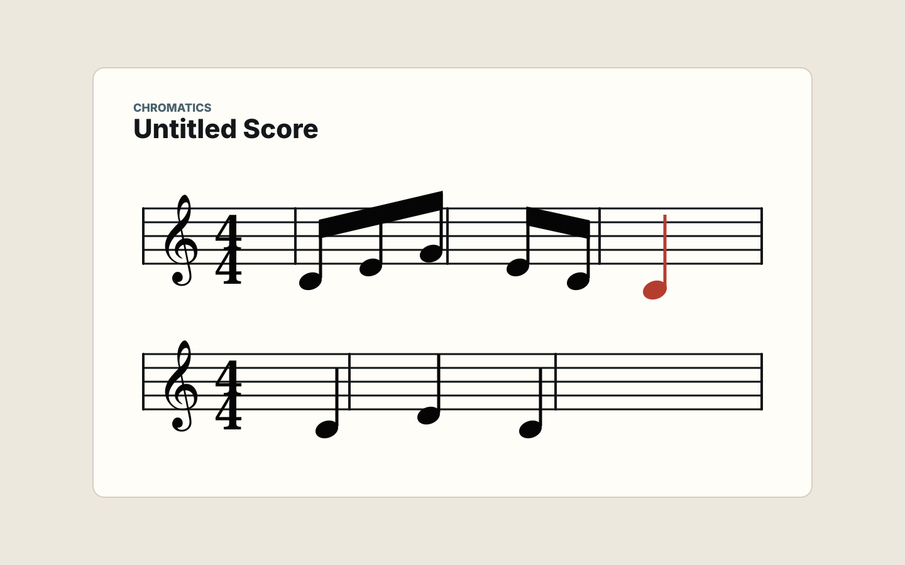

음표·쉼표 입력
선택, 음표, 쉼표 모드를 분리하고 키보드 중심 입력 흐름을 제공합니다.
Electron notation editor
단성부 악보 입력과 MusicXML 교환을 빠르게.

MVP workflow
선택, 음표, 쉼표 모드를 분리하고 키보드 중심 입력 흐름을 제공합니다.
점음표, 타이, 셋잇단음표와 자동 빔을 단성부 범위에서 다룹니다.
간단한 악보를 가져오고 내보내며 다른 사보 도구와 연결할 수 있습니다.
Download
첫 공개 버전은 미서명 prerelease입니다. 설치 전 파일 이름과 체크섬을 확인해 주세요.
JavaScript를 사용할 수 없으면 GitHub Releases에서 최신 파일을 확인할 수 있습니다.
GitHub Releases체크섬은 SHA256SUMS.txt에서 확인합니다.
초기 배포 범위